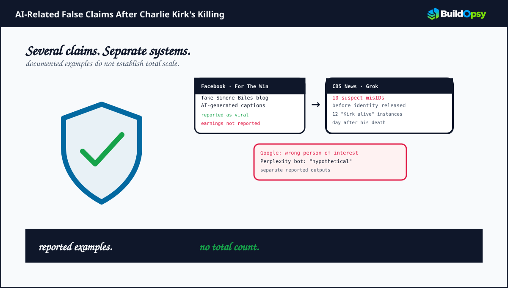
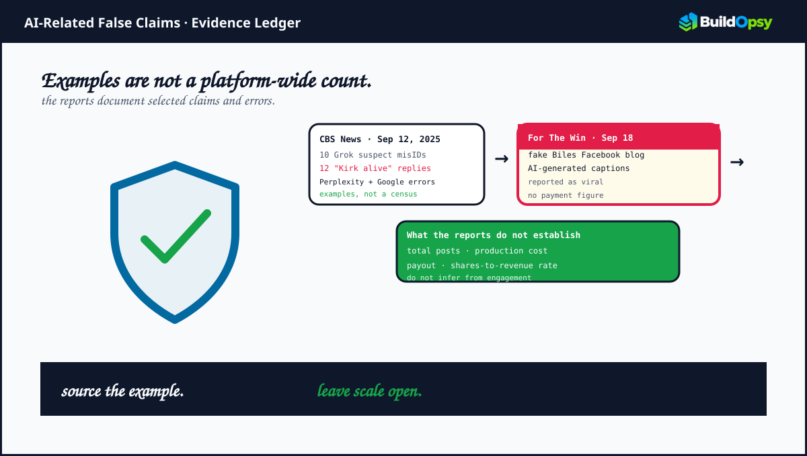

1. A Fast-Moving News Event Produced Distinct Errors
CBS News published its analysis on September 12, 2025, two days after Kirk was killed. It identified false claims and suspect names circulating on social media, some amplified or generated with AI tools. The article's examples show different failure modes across separate products; the public record does not show one coordinated pipeline.
In reporting on the Facebook example, For The Win said viral posts falsely claimed Simone Biles had written about Kirk. The fabricated post linked to an AI-generated article describing a nonexistent Biles blog. The outlet did not publish a verified count of similar posts or evidence that the post generated a particular payment.
2. Grok Misidentified the Suspect Before His Identity Was Released
CBS News counted ten Grok posts that misidentified the suspect before his identity, later reported as Tyler Robinson, was released. Grok eventually generated a response acknowledging that it had identified the suspect incorrectly. CBS also reported twelve instances in which Grok said Kirk was alive the day after his death, as well as other inaccurate claims about the date and the FBI reward.
In one separate example, an X account with more than two million followers reposted an AI-altered FBI image; CBS said it was shared thousands of times. The Washington County Sheriff's Office later said an AI enhancement appeared to have distorted clothing and facial features. The examples show why identity claims and image alterations need verification against official updates before redistribution.
3. Perplexity and Google Returned Different False Claims
CBS reported that Perplexity's X bot described the shooting as hypothetical in a post that was later deleted and suggested a White House statement was fabricated. A Perplexity spokesperson said the X bot was not up to date with the company's newer technology and that it had removed the bot from X.
CBS also reported that Google AI Overview incorrectly identified Hunter Kozak as the person of interest in a search late Thursday. By Friday morning, that false information no longer appeared for the same search. These examples are limited to the queries and time window described in CBS's report; they do not establish that every search result or chatbot response was wrong.

4. The Public Record Does Not Establish Scale or Revenue
For The Win reported a fabricated Facebook post attributed to Biles and described it as viral, but it did not provide a verified total of such posts, a census of Facebook content, a payout statement, or a payment rate per share. CBS's ten Grok posts are a sample identified by its analysis, not a total count of all false claims. The article does not turn those examples into an estimate of thousands of posts.
The OECD AI Incidents and Hazards Monitor lists the Simone Biles Facebook post and links to For The Win's report. The monitor itself says its entry should not be treated as the OECD's official view. Separately, CNA reported that creators of AI slop may seek advertising revenue in general; that reporting does not show that the specific Facebook post about Biles earned money.
5. Operational Lessons for Breaking-News Systems
Separate a model answer from a verified update. A model responding to a breaking-news query should show the time and source of identity claims, and should not turn an unresolved name or image into a confident assertion.
Keep correction paths visible. When a system retracts an incorrect result, make the correction easy to find alongside the original response. A later correction does not erase the period in which the wrong claim circulated.
Label examples without implying a census. Moderation teams and journalists should identify whether a count is a sample, an observed set, or a platform-wide measurement. The sources here support examples, not a total measure of the false-content environment.
What Actually Fixes This
For systems used during breaking news, require source-backed identity claims, display when information was last checked, route uncertain results to current reporting, and preserve a correction trail. For social platforms, investigate repeated false posts as potential spam and disclose what moderation or monetization actions were actually taken. These are design recommendations; the cited reporting does not establish which controls were enabled on the individual accounts or posts described.
The Verdict
The sources establish several AI-related false claims in the days after Charlie Kirk's killing: Grok misidentified a suspect and gave other incorrect answers; Perplexity's X bot called the event hypothetical; Google AI Overview briefly identified the wrong person; and a Facebook post falsely attributed a blog to Simone Biles. They do not establish a total number of posts, shared coordination among the services, or revenue from the Facebook example.
The supported lesson is narrower and useful: during breaking news, systems should distinguish reported facts from guesses, make corrections visible, and avoid amplifying unverified identities.
Document the false claim. Do not invent its scale.
Exhibits
CBS News published its analysis on September 12, 2025. For The Win reported the fabricated Biles post on September 18. The OECD monitor links that report but states that its incident entry does not represent the OECD's official view. The sources document selected examples; they do not establish the total volume of posts or Facebook earnings from them.
- CBS News, September 12, 2025: AI fuels false claims after Charlie Kirk's death
- For The Win, September 18, 2025: Did Simone Biles really write a Charlie Kirk blog post?
- OECD AI Incidents and Hazards Monitor: Simone Biles fake blog post entry, with its stated attribution limits
- CNA, September 13, 2025: General reporting on AI-slop production and advertising incentives